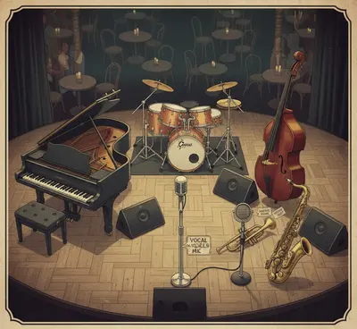

Informacje Ogólne
💧
Woda
0,5l na osobę na każdy set.
🗝️
Garderoba
Zamykane pomieszczenie.
🅿️
Parking
Dla aut osobowych.
😊
Przekąski
Miły gest.
Lista Sprzętu / Instrumentów
🎤 Wokal
- Jeden mikrofon wokalny
- Statyw mikrofonowy
- Pulpit na nuty
🎹 Piano
- Pianino/fortepian lub stage piano 88 klawiszy (ważona klawiatura)
- Pulpit na nuty
*W razie problemów prosimy o kontakt.
🥁 Perkusja
- Pełny zestaw (talerze, hi-hat, werbel, tomy, stopa)
- Krzesło perkusyjne i dywan
- Statywy perkusyjne
- Pulpit na nuty
*W razie problemów prosimy o kontakt.
🎻 Kontrabas
- Podpięcie przez wyjście liniowe
- Pulpit na nuty
🎺 Trąbka
- Mikrofon na klipsie lub statywie
- Pulpit na nuty
🎷 Saksofon
- Mikrofon na klipsie lub statywie
- Pulpit na nuty
- Mikrofon do chórków
Nagłośnienie i Scena
4x6m
Wymiar sceny
(Minimum, zadaszona w plenerze)
4
Monitory Odsłuchowe
(Na scenie)
1h
Soundcheck
(Dostęp 3h przed)
Układ na Scenie

Dodatkowe Informacje
- Zespół jest w stanie przywieźć ze sobą część instrumentów/sprzętu, jeśli tylko nie staną na przeszkodzie ograniczenia transportowe.
- W razie problemów z zapewnieniem któregokolwiek z elementów ridera prosimy o pilny kontakt.
- Opłaty licencyjne (ZAiKS) ponosi Organizator.
- Organizator zobowiązany jest do zapewnienia wszelkich zezwoleń i ewentualnej ochrony.